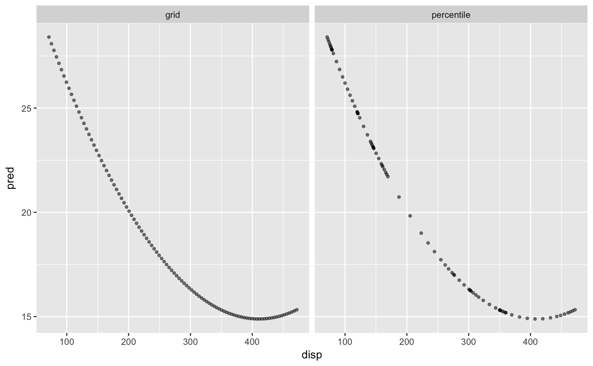

<!-- Generated by pkgdown: do not edit by hand -->
<!DOCTYPE html>
<html lang="en">
  <head>
  <meta charset="utf-8">
<meta http-equiv="X-UA-Compatible" content="IE=edge">
<meta name="viewport" content="width=device-width, initial-scale=1.0">

<title>Create a Profiling Version of a Data Set — step_profile • recipes</title>

<!-- jquery -->
<script src="https://code.jquery.com/jquery-3.1.0.min.js" integrity="sha384-nrOSfDHtoPMzJHjVTdCopGqIqeYETSXhZDFyniQ8ZHcVy08QesyHcnOUpMpqnmWq" crossorigin="anonymous"></script>

<!-- Bootstrap -->
<link href="../tidyverse.css" rel="stylesheet">
<script src="https://maxcdn.bootstrapcdn.com/bootstrap/3.3.7/js/bootstrap.min.js" integrity="sha384-Tc5IQib027qvyjSMfHjOMaLkfuWVxZxUPnCJA7l2mCWNIpG9mGCD8wGNIcPD7Txa" crossorigin="anonymous"></script>

<!-- Font Awesome icons -->
<link href="https://maxcdn.bootstrapcdn.com/font-awesome/4.6.3/css/font-awesome.min.css" rel="stylesheet" integrity="sha384-T8Gy5hrqNKT+hzMclPo118YTQO6cYprQmhrYwIiQ/3axmI1hQomh7Ud2hPOy8SP1" crossorigin="anonymous">

<!-- clipboard.js -->
<script src="https://cdnjs.cloudflare.com/ajax/libs/clipboard.js/1.7.1/clipboard.min.js" integrity="sha384-cV+rhyOuRHc9Ub/91rihWcGmMmCXDeksTtCihMupQHSsi8GIIRDG0ThDc3HGQFJ3" crossorigin="anonymous"></script>

<!-- sticky kit -->
<script src="https://cdnjs.cloudflare.com/ajax/libs/sticky-kit/1.1.3/sticky-kit.min.js" integrity="sha256-c4Rlo1ZozqTPE2RLuvbusY3+SU1pQaJC0TjuhygMipw=" crossorigin="anonymous"></script>

<!-- pkgdown -->
<link href="../pkgdown.css" rel="stylesheet">
<script src="../pkgdown.js"></script>
<link href="../tidyverse-2.css" rel="stylesheet">

<meta property="og:title" content="Create a Profiling Version of a Data Set — step_profile" />

<meta property="og:description" content="step_profile creates a specification of a recipe step that
will fix the levels of all variables but one and will create a
sequence of values for the remaining variable. This step can be
helpful when creating partial regression plots for additive
models." />
<meta name="twitter:card" content="summary" />


<!-- mathjax -->
<script src='https://mathjax.rstudio.com/latest/MathJax.js?config=TeX-AMS-MML_HTMLorMML'></script>

<!--[if lt IE 9]>
<script src="https://oss.maxcdn.com/html5shiv/3.7.3/html5shiv.min.js"></script>
<script src="https://oss.maxcdn.com/respond/1.4.2/respond.min.js"></script>
<![endif]-->

<!-- google analytics -->
<script async src="https://www.googletagmanager.com/gtag/js?id=UA-115082821-1"></script>
<script>
 window.dataLayer = window.dataLayer || [];
 function gtag(){dataLayer.push(arguments);}
 gtag('js', new Date());

 gtag('config', 'UA-115082821-1');
</script>
  </head>

  <body>
    <div class="container template-reference-topic">
      <header>
      <div class="navbar navbar-default navbar-fixed-top" role="navigation">
  <div class="container">
    <div class="navbar-header">
      <button type="button" class="navbar-toggle collapsed" data-toggle="collapse" data-target="#navbar" aria-expanded="false">
        <span class="sr-only">Toggle navigation</span>
        <span class="icon-bar"></span>
        <span class="icon-bar"></span>
        <span class="icon-bar"></span>
      </button>

      <div class="navbar-brand-container">
        <a class="navbar-brand" href="../index.html">recipes</a>
        <div class="info">
          <span class="partof">part of the <a href="https://tidyverse.org">tidyverse</a></span>
          <span class="version version-default" data-toggle="tooltip" data-placement="bottom" title="Released version">0.1.4</span>
        </div>
      </div>
    </div>
    <div id="navbar" class="navbar-collapse collapse">
      <ul class="nav navbar-nav navbar-right">
        <li>
  <a href="../articles/Simple_Example.html">Simple Example</a>
</li>
<li class="dropdown">
  <a href="#" class="dropdown-toggle" data-toggle="dropdown" role="button" aria-expanded="false">
    Articles
     
    <span class="caret"></span>
  </a>
  <ul class="dropdown-menu" role="menu">
    <li>
      <a href="../articles/Selecting_Variables.html">Selecting Variables</a>
    </li>
    <li>
      <a href="../articles/Custom_Steps.html">Custom Steps</a>
    </li>
    <li>
      <a href="../articles/Ordering.html">The Order of Steps</a>
    </li>
    <li>
      <a href="../articles/Dummies.html">Dummy Variables and Interactions</a>
    </li>
    <li>
      <a href="../articles/Skipping.html">On Skipping Steps</a>
    </li>
    <li>
      <a href="../articles/articles/Subsampling.html">Subsampling for Class Imbalances</a>
    </li>
    <li>
      <a href="../articles/articles/Multivariate_PLS.html">Multivariate Analysis using Partial Least Squares</a>
    </li>
  </ul>
</li>
<li>
  <a href="../reference/index.html">Reference</a>
</li>
<li>
  <a href="../news/index.html">News</a>
</li>
        <li>
  <a href="https://github.com/tidymodels/recipes">
    <span class="fa fa-github fa-lg"></span>
     
  </a>
</li>
      </ul>
      
    </div><!--/.nav-collapse -->
  </div><!--/.container -->
</div><!--/.navbar -->

      
      </header>

<div class="row">
  <div class="col-md-9 contents">
    <div class="page-header">
    <h1>Create a Profiling Version of a Data Set</h1>
    <small class="dont-index">Source: <a href='https://github.com/tidymodels/recipes/blob/master/R/profile.R'><code>R/profile.R</code></a></small>
    <div class="hidden name"><code>step_profile.Rd</code></div>
    </div>

    <div class="ref-description">
    
    <p><code>step_profile</code> creates a <em>specification</em> of a recipe step that
will fix the levels of all variables but one and will create a
sequence of values for the remaining variable. This step can be
helpful when creating partial regression plots for additive
models.</p>
    
    </div>

    <pre class="usage"><span class='fu'>step_profile</span>(<span class='no'>recipe</span>, <span class='no'>...</span>, <span class='kw'>profile</span> <span class='kw'>=</span> <span class='kw'>NULL</span>, <span class='kw'>pct</span> <span class='kw'>=</span> <span class='fl'>0.5</span>, <span class='kw'>index</span> <span class='kw'>=</span> <span class='fl'>1</span>,
  <span class='kw'>grid</span> <span class='kw'>=</span> <span class='fu'><a href='https://www.rdocumentation.org/packages/base/topics/list'>list</a></span>(<span class='kw'>pctl</span> <span class='kw'>=</span> <span class='fl'>TRUE</span>, <span class='kw'>len</span> <span class='kw'>=</span> <span class='fl'>100</span>), <span class='kw'>columns</span> <span class='kw'>=</span> <span class='kw'>NULL</span>, <span class='kw'>role</span> <span class='kw'>=</span> <span class='fl'>NA</span>,
  <span class='kw'>trained</span> <span class='kw'>=</span> <span class='fl'>FALSE</span>, <span class='kw'>skip</span> <span class='kw'>=</span> <span class='fl'>FALSE</span>, <span class='kw'>id</span> <span class='kw'>=</span> <span class='fu'><a href='rand_id.html'>rand_id</a></span>(<span class='st'>"profile"</span>))

<span class='co'># S3 method for step_profile</span>
<span class='fu'><a href='https://www.rdocumentation.org/packages/generics/topics/tidy'>tidy</a></span>(<span class='no'>x</span>, <span class='no'>...</span>)</pre>
    
    <h2 class="hasAnchor" id="arguments"><a class="anchor" href="#arguments"></a>Arguments</h2>
    <table class="ref-arguments">
    <colgroup><col class="name" /><col class="desc" /></colgroup>
    <tr>
      <th>recipe</th>
      <td><p>A recipe object. The step will be added to the
sequence of operations for this recipe.</p></td>
    </tr>
    <tr>
      <th>...</th>
      <td><p>One or more selector functions to choose which
variables will fixed to a single value. See <code><a href='selections.html'>selections()</a></code> for
more details. For the <code>tidy</code> method, these are not currently
used.</p></td>
    </tr>
    <tr>
      <th>profile</th>
      <td><p>A call to <code><a href='http://dplyr.tidyverse.org/reference/vars.html'>dplyr::vars()</a></code>) to specify which
variable will be profiled (see <code><a href='selections.html'>selections()</a></code>). If a column is
included in both lists to be fixed and to be profiled, an error
is thrown.</p></td>
    </tr>
    <tr>
      <th>pct</th>
      <td><p>A value between 0 and 1 that is the percentile to
fix continuous variables. This is applied to all continuous
variables captured by the selectors. For date variables, either
the minimum, median, or maximum used based on their distance to
<code>pct</code>.</p></td>
    </tr>
    <tr>
      <th>index</th>
      <td><p>The level that qualitative variables will be
fixed. If the variables are character (not factors), this will
be the index of the sorted unique values. This is applied to all
qualitative variables captured by the selectors.</p></td>
    </tr>
    <tr>
      <th>grid</th>
      <td><p>A named list with elements <code>pctl</code> (a logical) and
<code>len</code> (an integer). If <code><a href='https://www.rdocumentation.org/packages/base/topics/assignOps'>pctl = TRUE</a></code>, then <code>len</code> denotes how
many percentiles to use to create the profiling grid. This
creates a grid between 0 and 1 and the profile is determined by
the percentiles of the data. For example, if <code><a href='https://www.rdocumentation.org/packages/base/topics/assignOps'>pctl = TRUE</a></code> and
<code><a href='https://www.rdocumentation.org/packages/base/topics/assignOps'>len = 3</a></code>, the profile would contain the minimum, median, and
maximum values. If <code><a href='https://www.rdocumentation.org/packages/base/topics/assignOps'>pctl = FALSE</a></code>, it defines how many grid
points between the minimum and maximum values should be created.
This parameter is ignored for qualitative variables (since all
of their possible levels are profiled). In the case of date
variables, <code><a href='https://www.rdocumentation.org/packages/base/topics/assignOps'>pctl = FALSE</a></code> will always be used since there is no
quantile method for dates.</p></td>
    </tr>
    <tr>
      <th>columns</th>
      <td><p>A character string that contains the names of
columns that should be fixed and their values. These values are
not determined until <code><a href='prep.html'>prep.recipe()</a></code> is called.</p></td>
    </tr>
    <tr>
      <th>role</th>
      <td><p>Not used by this step since no new variables are
created.</p></td>
    </tr>
    <tr>
      <th>trained</th>
      <td><p>A logical to indicate if the quantities for
preprocessing have been estimated.</p></td>
    </tr>
    <tr>
      <th>skip</th>
      <td><p>A logical. Should the step be skipped when the
recipe is baked by <code><a href='bake.html'>bake.recipe()</a></code>? While all operations are baked
when <code><a href='prep.html'>prep.recipe()</a></code> is run, some operations may not be able to be
conducted on new data (e.g. processing the outcome variable(s)).
Care should be taken when using <code><a href='https://www.rdocumentation.org/packages/base/topics/assignOps'>skip = TRUE</a></code> as it may affect
the computations for subsequent operations</p></td>
    </tr>
    <tr>
      <th>id</th>
      <td><p>A character string that is unique to this step to identify it.</p></td>
    </tr>
    <tr>
      <th>x</th>
      <td><p>A <code>step_profile</code> object.</p></td>
    </tr>
    </table>
    
    <h2 class="hasAnchor" id="value"><a class="anchor" href="#value"></a>Value</h2>

    <p>An updated version of <code>recipe</code> with the new step
added to the sequence of existing steps (if any). For the
<code>tidy</code> method, a tibble with columns <code>terms</code> (which
is the columns that will be affected), and <code>type</code> (fixed or
profiled).</p>
    
    <h2 class="hasAnchor" id="details"><a class="anchor" href="#details"></a>Details</h2>

    <p>This step is atypical in that, when baked, the
<code>new_data</code> argument is ignored; the resulting data set is
based on the fixed and profiled variable's information.</p>
    

    <h2 class="hasAnchor" id="examples"><a class="anchor" href="#examples"></a>Examples</h2>
    <pre class="examples"><div class='input'><span class='fu'><a href='https://www.rdocumentation.org/packages/utils/topics/data'>data</a></span>(<span class='no'>okc</span>)

<span class='co'># Setup a grid across date but keep the other values fixed</span>
<span class='fu'><a href='recipe.html'>recipe</a></span>(~ <span class='no'>diet</span> + <span class='no'>height</span> + <span class='no'>date</span>, <span class='kw'>data</span> <span class='kw'>=</span> <span class='no'>okc</span>) <span class='kw'>%&gt;%</span>
  <span class='fu'>step_profile</span>(-<span class='no'>date</span>, <span class='kw'>profile</span> <span class='kw'>=</span> <span class='fu'>vars</span>(<span class='no'>date</span>)) <span class='kw'>%&gt;%</span>
  <span class='fu'><a href='prep.html'>prep</a></span>(<span class='kw'>training</span> <span class='kw'>=</span> <span class='no'>okc</span>, <span class='kw'>retain</span> <span class='kw'>=</span> <span class='fl'>TRUE</span>) <span class='kw'>%&gt;%</span>
  <span class='no'>juice</span></div><div class='output co'>#&gt; # A tibble: 100 x 3
#&gt;    diet     height date      
#&gt;    &lt;fct&gt;     &lt;dbl&gt; &lt;date&gt;    
#&gt;  1 anything     68 2011-06-27
#&gt;  2 anything     68 2011-06-30
#&gt;  3 anything     68 2011-07-04
#&gt;  4 anything     68 2011-07-08
#&gt;  5 anything     68 2011-07-11
#&gt;  6 anything     68 2011-07-15
#&gt;  7 anything     68 2011-07-19
#&gt;  8 anything     68 2011-07-23
#&gt;  9 anything     68 2011-07-26
#&gt; 10 anything     68 2011-07-30
#&gt; # ... with 90 more rows</div><div class='input'>

<span class='co'>##########</span>

<span class='co'># An *additive* model; not for use when there are interactions or</span>
<span class='co'># other functional relationships between predictors</span>

<span class='no'>lin_mod</span> <span class='kw'>&lt;-</span> <span class='fu'><a href='https://www.rdocumentation.org/packages/stats/topics/lm'>lm</a></span>(<span class='no'>mpg</span> ~ <span class='fu'><a href='https://www.rdocumentation.org/packages/stats/topics/poly'>poly</a></span>(<span class='no'>disp</span>, <span class='fl'>2</span>) + <span class='no'>cyl</span> + <span class='no'>hp</span>, <span class='kw'>data</span> <span class='kw'>=</span> <span class='no'>mtcars</span>)

<span class='co'># Show the difference in the two grid creation methods</span>

<span class='no'>disp_pctl</span> <span class='kw'>&lt;-</span> <span class='fu'><a href='recipe.html'>recipe</a></span>(~ <span class='no'>disp</span> + <span class='no'>cyl</span> + <span class='no'>hp</span>, <span class='kw'>data</span> <span class='kw'>=</span> <span class='no'>mtcars</span>) <span class='kw'>%&gt;%</span>
  <span class='fu'>step_profile</span>(-<span class='no'>disp</span>, <span class='kw'>profile</span> <span class='kw'>=</span> <span class='fu'><a href='ggplot2.tidyverse.org/reference/vars.html'>vars</a></span>(<span class='no'>disp</span>)) <span class='kw'>%&gt;%</span>
  <span class='fu'><a href='prep.html'>prep</a></span>(<span class='kw'>training</span> <span class='kw'>=</span> <span class='no'>mtcars</span>, <span class='kw'>retain</span> <span class='kw'>=</span> <span class='fl'>TRUE</span>)

<span class='no'>disp_grid</span> <span class='kw'>&lt;-</span> <span class='fu'><a href='recipe.html'>recipe</a></span>(~ <span class='no'>disp</span> + <span class='no'>cyl</span> + <span class='no'>hp</span>, <span class='kw'>data</span> <span class='kw'>=</span> <span class='no'>mtcars</span>) <span class='kw'>%&gt;%</span>
  <span class='fu'>step_profile</span>(
    -<span class='no'>disp</span>,
    <span class='kw'>profile</span> <span class='kw'>=</span> <span class='fu'><a href='ggplot2.tidyverse.org/reference/vars.html'>vars</a></span>(<span class='no'>disp</span>),
    <span class='kw'>grid</span> <span class='kw'>=</span> <span class='fu'><a href='https://www.rdocumentation.org/packages/base/topics/list'>list</a></span>(<span class='kw'>pctl</span> <span class='kw'>=</span> <span class='fl'>FALSE</span>, <span class='kw'>len</span> <span class='kw'>=</span> <span class='fl'>100</span>)
  ) <span class='kw'>%&gt;%</span>
  <span class='fu'><a href='prep.html'>prep</a></span>(<span class='kw'>training</span> <span class='kw'>=</span> <span class='no'>mtcars</span>, <span class='kw'>retain</span> <span class='kw'>=</span> <span class='fl'>TRUE</span>)

<span class='no'>grid_data</span> <span class='kw'>&lt;-</span> <span class='fu'><a href='juice.html'>juice</a></span>(<span class='no'>disp_grid</span>)
<span class='no'>grid_data</span> <span class='kw'>&lt;-</span> <span class='no'>grid_data</span> <span class='kw'>%&gt;%</span>
  <span class='fu'>mutate</span>(<span class='kw'>pred</span> <span class='kw'>=</span> <span class='fu'><a href='https://www.rdocumentation.org/packages/stats/topics/predict'>predict</a></span>(<span class='no'>lin_mod</span>, <span class='no'>grid_data</span>),
         <span class='kw'>method</span> <span class='kw'>=</span> <span class='st'>"grid"</span>)

<span class='no'>pctl_data</span> <span class='kw'>&lt;-</span> <span class='fu'><a href='juice.html'>juice</a></span>(<span class='no'>disp_pctl</span>)
<span class='no'>pctl_data</span> <span class='kw'>&lt;-</span> <span class='no'>pctl_data</span> <span class='kw'>%&gt;%</span>
  <span class='fu'>mutate</span>(<span class='kw'>pred</span> <span class='kw'>=</span> <span class='fu'><a href='https://www.rdocumentation.org/packages/stats/topics/predict'>predict</a></span>(<span class='no'>lin_mod</span>, <span class='no'>pctl_data</span>),
         <span class='kw'>method</span> <span class='kw'>=</span> <span class='st'>"percentile"</span>)

<span class='no'>plot_data</span> <span class='kw'>&lt;-</span> <span class='fu'>bind_rows</span>(<span class='no'>grid_data</span>, <span class='no'>pctl_data</span>)

<span class='fu'><a href='https://www.rdocumentation.org/packages/base/topics/library'>library</a></span>(<span class='no'>ggplot2</span>)

<span class='fu'><a href='ggplot2.tidyverse.org/reference/ggplot.html'>ggplot</a></span>(<span class='no'>plot_data</span>, <span class='fu'><a href='ggplot2.tidyverse.org/reference/aes.html'>aes</a></span>(<span class='kw'>x</span> <span class='kw'>=</span> <span class='no'>disp</span>, <span class='kw'>y</span> <span class='kw'>=</span> <span class='no'>pred</span>)) +
  <span class='fu'><a href='ggplot2.tidyverse.org/reference/geom_point.html'>geom_point</a></span>(<span class='kw'>alpha</span> <span class='kw'>=</span> <span class='fl'>.5</span>, <span class='kw'>cex</span> <span class='kw'>=</span> <span class='fl'>1</span>) +
  <span class='fu'><a href='ggplot2.tidyverse.org/reference/facet_wrap.html'>facet_wrap</a></span>(~ <span class='no'>method</span>)</div><div class='img'></div></pre>
  </div>
  <div class="col-md-3 hidden-xs hidden-sm" id="sidebar">
    <h2>Contents</h2>
    <ul class="nav nav-pills nav-stacked">
      <li><a href="#arguments">Arguments</a></li>
      
      <li><a href="#value">Value</a></li>

      <li><a href="#details">Details</a></li>
      
      <li><a href="#examples">Examples</a></li>
    </ul>

  </div>
</div>

      <footer>
      <div class="tidyverse">
  <p>recipes is a part of the <strong>tidyverse</strong>, an ecosystem of packages designed with common APIs and a shared philosophy. Learn more at <a href="https://tidyverse.org">tidyverse.org</a>.</p>
</div>

<div class="author">
  <p>
    Developed by Max Kuhn, <a href='http://hadley.nz'>Hadley Wickham</a>.
    Site built by <a href="https://pkgdown.r-lib.org">pkgdown</a>.
  </p>
</div>
      </footer>
   </div>

  

  </body>
</html>

